The CO₂ mark, designed from pencil sketches, and the 16-second 9:16 animation that introduces it on social. The wordplay, the identity and three core messages land before the thumb moves on.
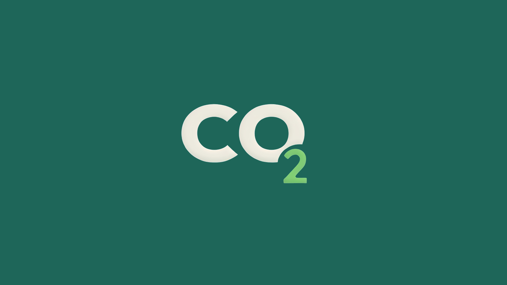
The work
Introduce CO₂nstruction in a single vertical clip built for social. The brand's name swaps the “Co” in Construction for the chemical symbol CO₂, and the clip had to read that wordplay, land the identity and carry the brand's message, all inside sixteen seconds.
A ready-to-post brand intro: the wordplay, the full identity and three messaging lines, all inside a sixteen-second vertical clip sized for exactly where it's meant to run.
Stills
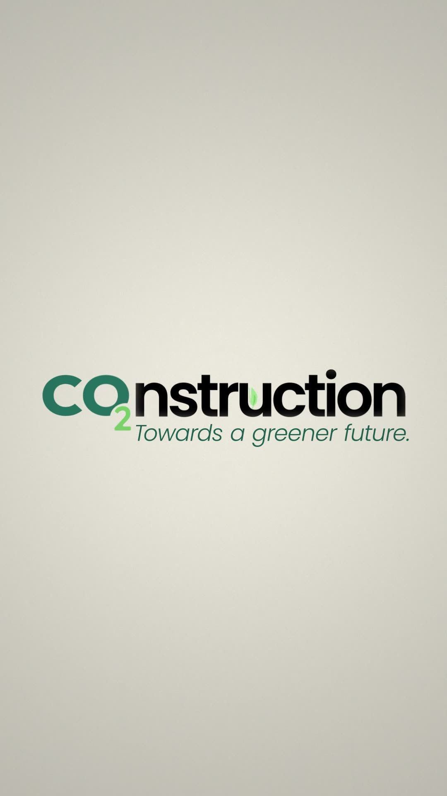
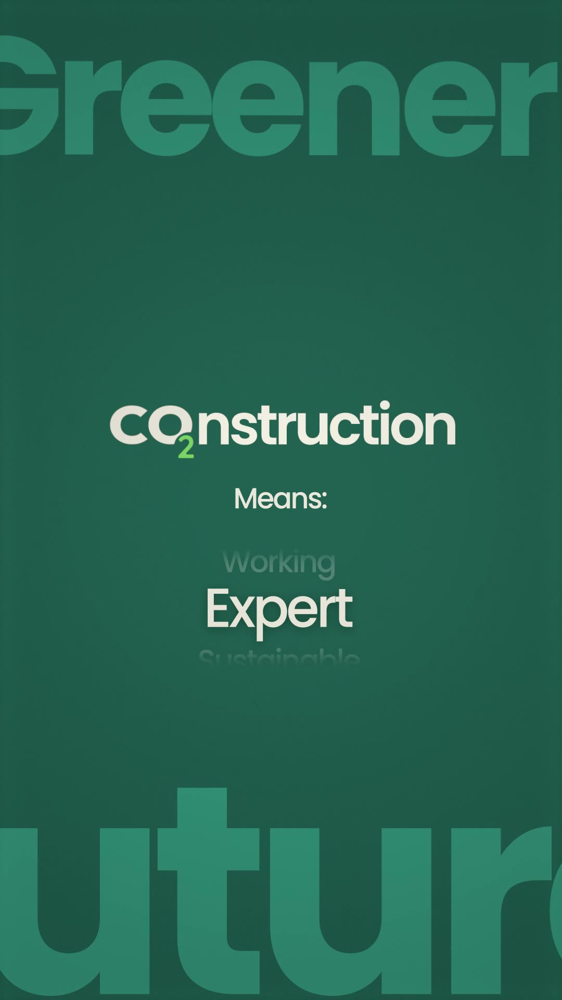
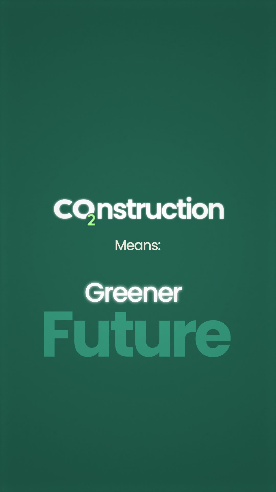
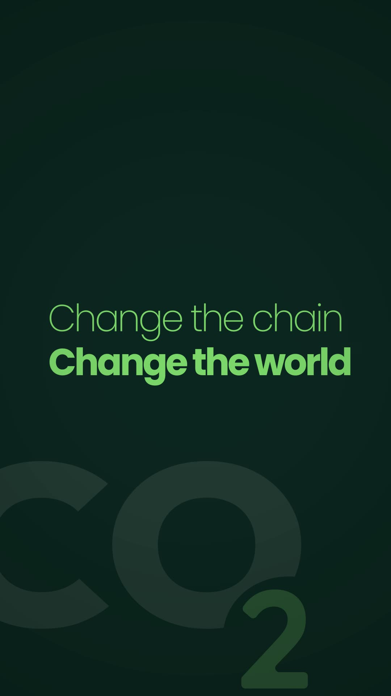
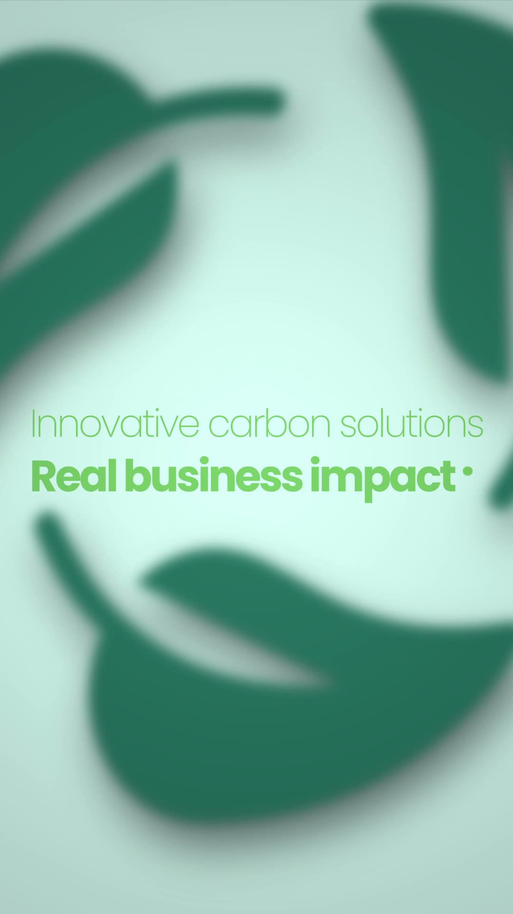
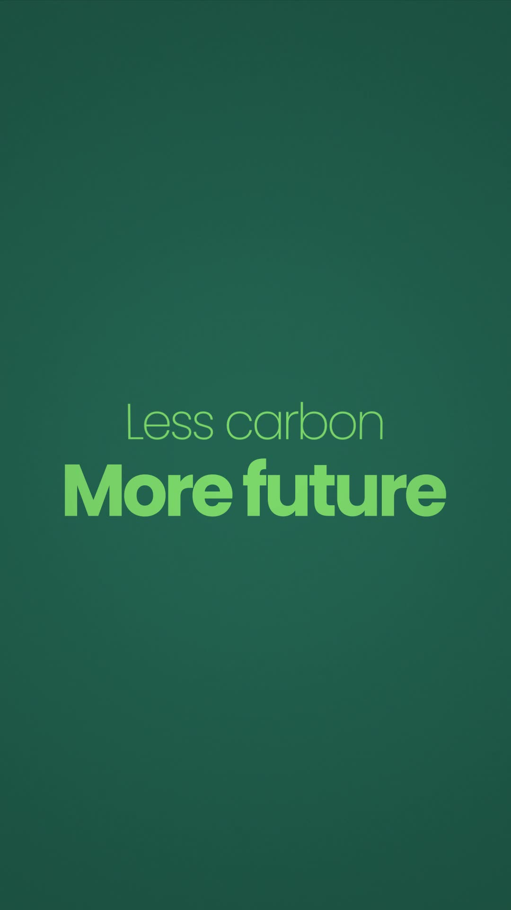
Logo sketches
I designed the CO₂ mark before animating it. Pencil first: the letters, the ideas behind them, a first palette.
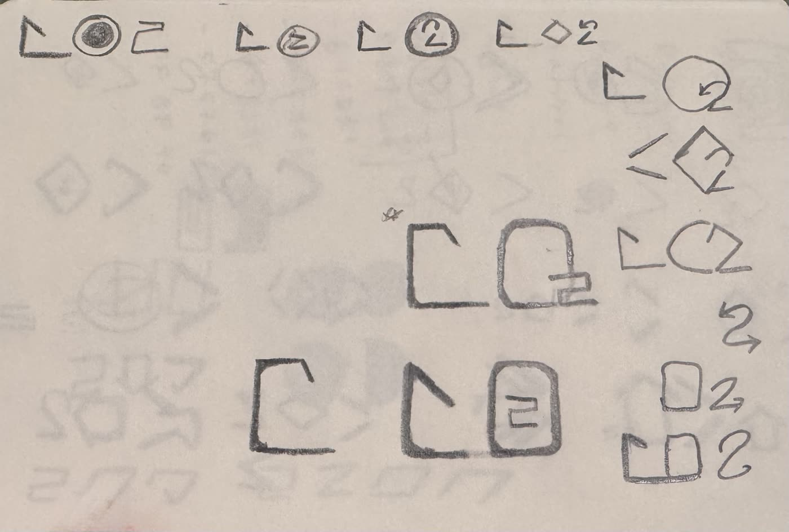
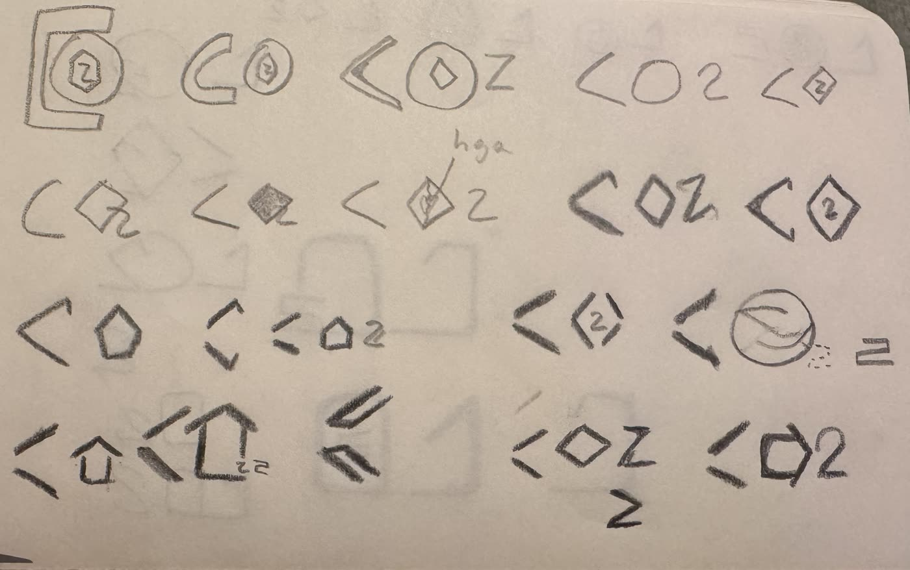
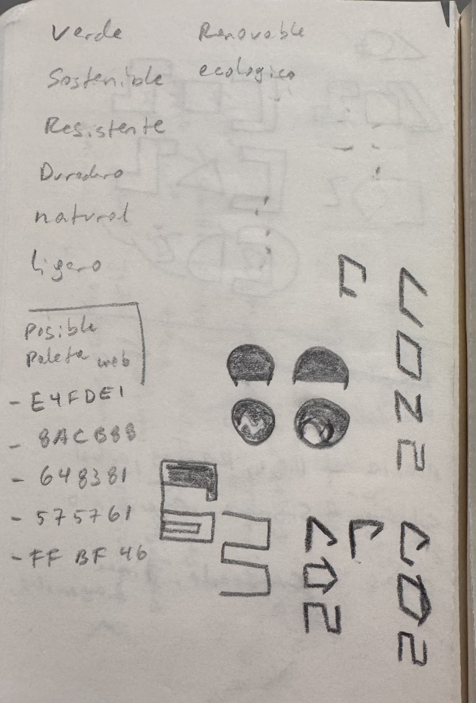
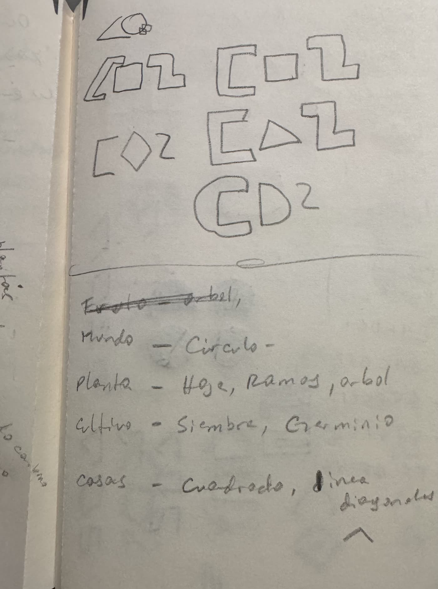